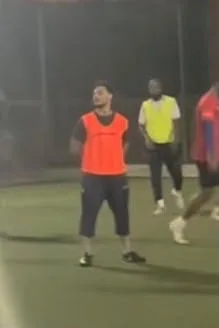

No likey, no lighty
Sudz faces a one-match suspension following last week’s antics, when the lights at the pitch went out after the controversial golden goal call. Many believe he got off lightly (pun fully intended), but he will be watching from the sidelines today. We sought comment from the chairman, who said: “Him watching from the sidelines today is enough of a humiliation following the disgraceful behaviour last week.”
However, the story doesn’t end there. Reports from sources suggest Ahmed Milky and Skinz were the ones who initiated the calls for golden goal in the dying minutes of the game. The board is reviewing further punishments, which could create friction between Dictator AF and the rest of the committee. Critics of the AF regime secretly think Ahmed Milky in particular will get away with it, as AF doesn’t want those problems.

Hanad Grove new position?VETERAN STRIKER SET FOR A DEEPER ROLE
A veteran of the game, who has previously caused defenders nightmares, may have found a new position according to recent reports. The one-time striker will now play in a deeper role (CB/DM), which sources say complements his playing style better as he can carry the ball and defend resolutely. Sources also claim it’s better for everyone, as he couldn’t hit a barn door if he tried.
Committee looking for a new pitch to play at?
According to Toxic FC punters, some players (really just TT) have been leveraging the fence too much in games. Some say his fingerprints are all over the fences. The committee are assessing the opportunities to find a fenceless pitch to prevent fence abuse.

Ahmed PB flu game
Initial reports before last week’s game stated PB was fully fit, but when he took to the pitch viewers saw him doing yoga poses to get some air into his lungs, suggesting he was still unwell. AF was hoping for a Michael Jordan flu game-like performance, but he managed just 1 goal in the 6 games played (probably should’ve stayed home). The fitness report this week suggests he’s back to full health, but we’ll wait and see.
Penalties and back passes
Our sources say Hanad Southall was told before the game even started that back passes to the keeper result in a penalty. Nonetheless, he did it and the referee waved it away (Shamz didn’t want to give a penalty against his own team). Dictator AF has reconfirmed the rules and said there will be strict enforcement from now on. You have all been warned!